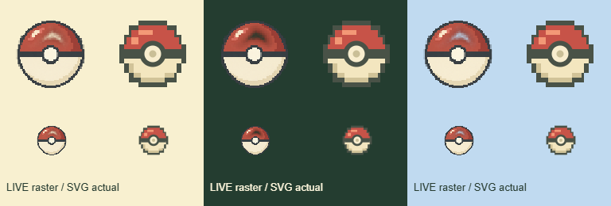
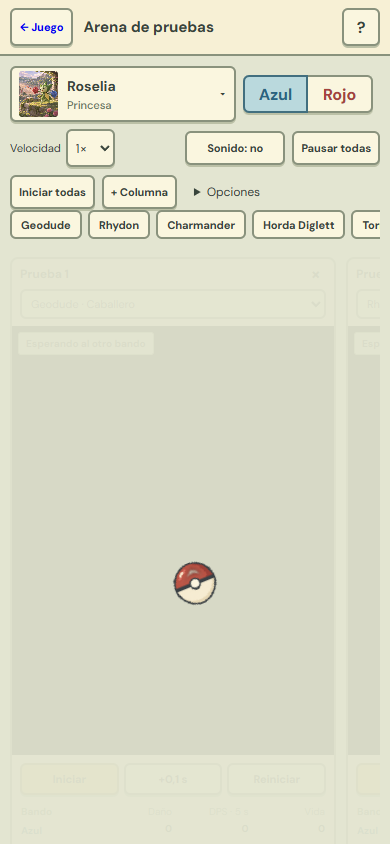
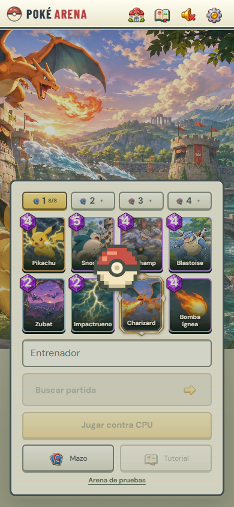
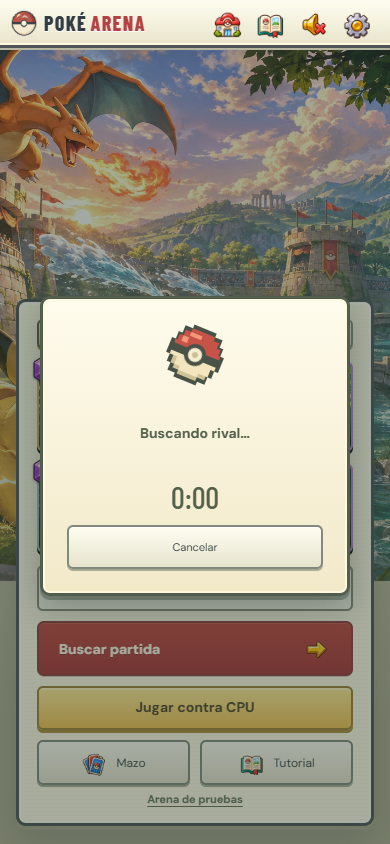
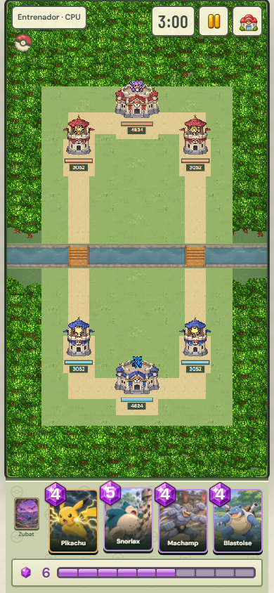
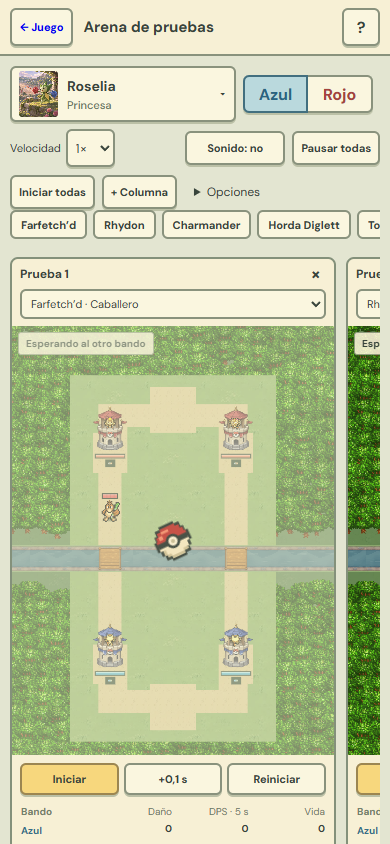

El raster publicado tiene transparencia dentro del rojo. El SVG existente ya es sólido; el cambio 70aad50 hace que el favicon usado por el laboratorio salga de esas mismas formas. Las capas CSS de progreso conservan su comportamiento.
Procedencia, método y límites de CSS · Resumen y hashes · Diff de producto






45 estados revisados en móvil, tablet y escritorio; sin desplazamiento de los rectángulos medidos. Captura anterior · Captura de propuesta. No se publicó el cambio.